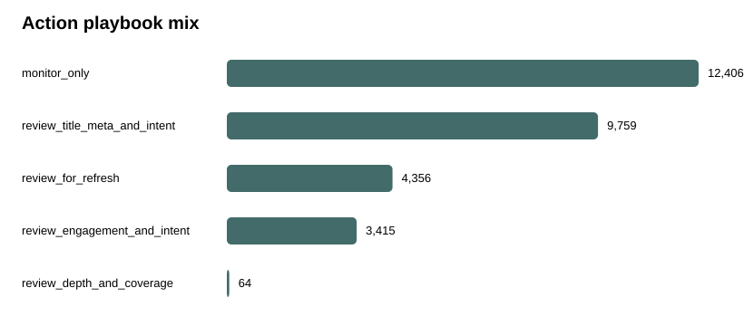

Which Content Pages Should Be Reviewed First? An Explainable Refresh-Opportunity Ranking Study
A public-safe capstone by Abdallah · reproducible from the linked repository · decision-support, not causal automation.
Abstract
Which pages should an SEO/content team review first when review capacity is limited? I frame the problem as ranking/scoring and evaluate a transparent rule against learned models on a 30,000-row anonymized starter slice spanning 32 pseudonymized clients. The target in this executed study is a same-window decline proxy, so the result is intentionally scoped as a workflow and ranking experiment rather than a future-outcome or causal study. Validation holds out entire clients, the primary metric is Precision@50, and label-derived fields are excluded from the feature set. On this run the best method by Precision@50 is random_forest at 0.860, compared with the fixed rule at 0.260; the output is converted into a reason-coded human review queue with explicit no-go automation rules.
1. Introduction / Problem
Large content portfolios create a prioritization problem before they create a modeling problem. A strategist may have thousands of pages but capacity to inspect only a small set. The useful decision is therefore not “predict decline” in isolation; it is which pages should be reviewed first, with enough explanation that a human can decide what, if anything, to change.
This capstone follows the lane selected in Week 1: Refresh / Content Opportunity Scoring. It preserves the original decision, actor, action, and error-cost framing throughout the later modeling work.
2. Data
The executed evidence uses the bundled anonymized starter slice with trailing-90-day search, engagement, freshness, and content measurements. No real client names, domains, URLs, keywords, queries, or titles are published. The larger gated internship warehouse is documented separately at 78,835,655 daily fact rows from 2025-01-27 through 2026-06-30; this page does not claim a gated full-warehouse scan without an authentication-backed query receipt.
3. Methodology
- Task: ranking/scoring for a top-K review queue.
- Starter proxy:
trend_direction == "down"; its source columns are never model features. - Baseline: frozen rule combining visibility, freshness risk, position opportunity, and depth gap.
- Models: Logistic Regression and Random Forest over 12 observable feature-time fields.
- Validation: whole-client holdout, seed 42, zero client overlap.
- Metric: Precision@50 fixed before comparison, with Precision@20/100 and base rate shown alongside it.
- Leakage controls: no label siblings, IDs-as-features, product decision flags, or future-window inputs.
4. Results
| Method | P@20 | P@50 | P@100 | Avg Precision | ROC AUC |
|---|---|---|---|---|---|
| Fixed rule | 0.150 | 0.260 | 0.350 | 0.469 | 0.628 |
| Logistic Regression | 0.900 | 0.780 | 0.780 | 0.632 | 0.716 |
| Random Forest | 0.900 | 0.860 | 0.840 | 0.666 | 0.765 |
Held-out client test base rate: 0.391. The result should be read as measured ranking performance on this proxy and population, not as evidence that an edit will cause recovery.

Action mix from the full-data review queue. Model = ordering; reason codes + human context = action review.
5. Limitations & Honest Framing
- The starter target is same-window, not a future observed outcome.
- The 30k slice is not the full 78.8M-row daily warehouse.
- Client grouping helps generalization testing but does not replace time-forward evaluation.
- Seasonality, consolidation, SERP changes, campaigns, and tracking artifacts can make a recommendation wrong.
- No causal claim is made about refreshing, rewriting, or otherwise changing a page.
6. Ranked Recommendations
- Review high-ranked multi-signal candidates first.
- For visible low-CTR pages, inspect snippet/intent/SERP context before changing metadata.
- For stale visible pages, inspect accuracy and strategic relevance before refreshing.
- For weak-engagement pages, confirm analytics coverage and intent match first.
- For thin visible pages, inspect topical completeness rather than adding words mechanically.
- Route uncertain single-signal cases to monitoring.
No-go: no automatic rewrites, publishing, deletion, redirects, merges, or client actions from the score.
7. Reproducibility
All notebooks live under work/notebooks/. Random seeds are fixed at 42. Small JSON metric receipts and paper figures are committed; bulk queue CSVs remain git-ignored by design. The repository's smoke test checks the pipeline and leak guard.
8. Acknowledgments & Data Credit
Built as part of the FlyRank Machine Learning Internship using the pseudonymized FlyRank internship starter data and release documentation. Data/product credit: FlyRank AI. The public research report reviewed during the claim-audit week is The State of AI-Driven SEO in Numbers.